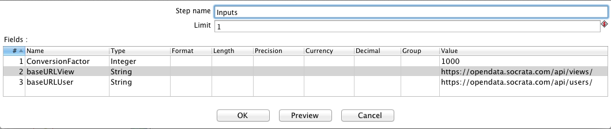
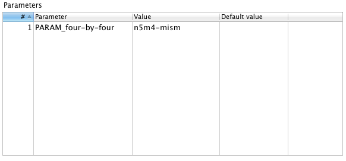

This repository contains several helpful tools to assist with monitoring ETL processes.
File: Show_Update_Times_of_View.ktr
Description: A Kettle transformation to be run in Spoon (the Kettle GUI). It pulls update information about a dataset from Socrata APIs and presents it in a human-readable format.
Usage: Open Show_Update_Times_of_View.ktr in Kettle/Pentaho. For the initial setup, open the “Inputs” step and replace baseURL parameter with the URL for a specific data portal (e.g., opendata.socrata.com, data.cityofchicago.org).
To execute, run the transformation (F9) and input the appropriate 4x4 as a value for the PARAM_four-by-four parameter, then press “OK”
Returns: If successful, it will return a prompt window with the following fields:
File: Log/A_DatasetLogs.sh (MacOS X/Linux/Unix only)
Description: Shows all of the log files associated with a dataset.
Usage: Open the terminal and type the name of a dataset:
$ cd /path/to/directory/open-data-etl-utility-kit/
$ sh Log/A_DatasetLogs.sh Name_of_dataset
Returns: Will list the log files associated for a user-specified ETL job. The output is displayed in the terminal.
File: Log/A_DatasetLogs.sh (MacOS X/Linux/Unix only)
Description: Shows the runtime for ETLs with a dataset.
Usage: Open the terminal and type the name of a dataset:
$ cd /path/to/directory/open-data-etl-utility-kit/
$ sh Log/A_ETLRuntimes.sh Name_of_dataset
Returns: The output will show the total run-times recorded in log files for the user-specified ETL. The output is displayed in the terminal.
File: Log/A_TodayLogs.sh (MacOS X/Linux/Unix only)
Description: Shows log files which were created today
Usage: Open the terminal and run the command:
$ sh /path/to/directory/open-data-etl-utility-kit/Log/A_odayLogs.sh
Returns: The output will show the list of log files which were generated today. The output is displayed in the terminal.